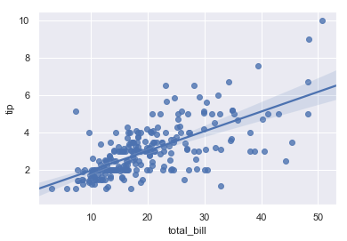
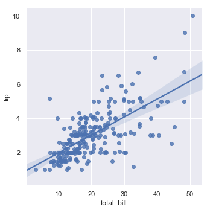
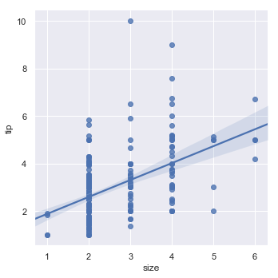
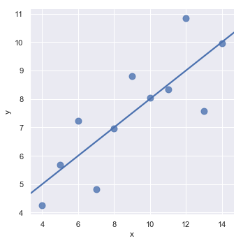
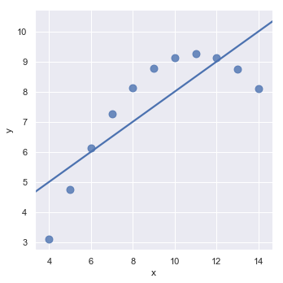
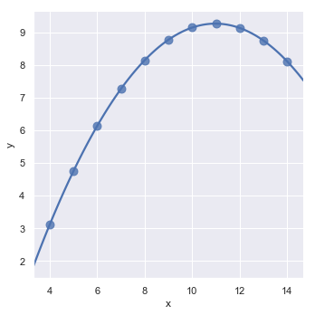
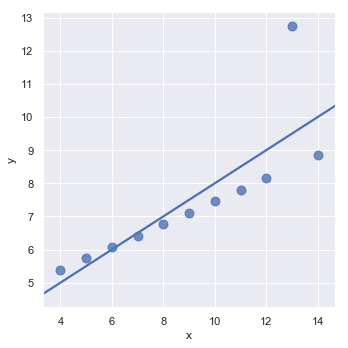
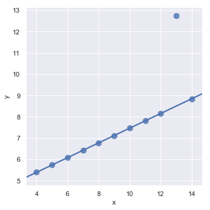

可视化线性关系
1 | import numpy as np |
绘制线性回归
Two main functions in seaborn are used to visualize a linear relationship as determined through regression. These functions, regplot() and lmplot() are closely related, and share much of their core functionality. It is important to understand the ways they differ, however, so that you can quickly choose the correct tool for particular job.
1 | #先看一个最简单的例子 |
<matplotlib.axes._subplots.AxesSubplot at 0x110f64d68>

1 | sns.lmplot(x='total_bill',y='tip',data=tips) |
<seaborn.axisgrid.FacetGrid at 0x110f15780>

regplot()可以接受更加灵活的输入，lmplot()接受整形输入，同时regplot()也拥有部分lmplot()的功能。
1 | sns.lmplot(x='size',y='tip',data=tips) |
<seaborn.axisgrid.FacetGrid at 0x112574400>

Fitting different kinds of models（拟合不同的模型）
1 | anscombe = sns.load_dataset("anscombe") |
| dataset | x | y | |
|---|---|---|---|
| 0 | I | 10.0 | 8.04 |
| 1 | I | 8.0 | 6.95 |
| 2 | I | 13.0 | 7.58 |
| 3 | I | 9.0 | 8.81 |
| 4 | I | 11.0 | 8.33 |
1 | sns.lmplot(x='x',y='y',data=anscombe.query("dataset == 'I'"),ci=None,scatter_kws={"s": 80}) |
<seaborn.axisgrid.FacetGrid at 0x1a1e166978>

1 | sns.lmplot(x="x", y="y", data=anscombe.query("dataset == 'II'"), |

1 | #上一个明明显拟合不到位，我们可以猜测这是一个多项式回归，利用order参数调用numpy.polyfit() |
<seaborn.axisgrid.FacetGrid at 0x1a1e3b3cc0>

1 | sns.lmplot(x="x", y="y", data=anscombe.query("dataset == 'III'"), |

1 | # 不同的损失函数来减轻相对较大的残差 |
